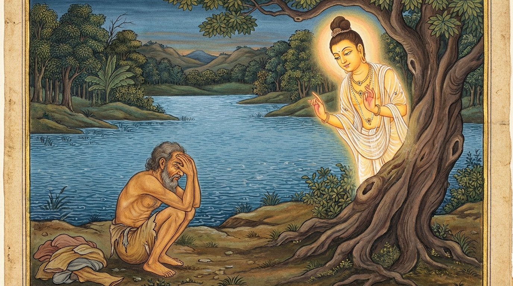

9. උභතෝභට්ඨ ජාතකය (139)
“අක්ඛී භින්නා පටො නට්ඨො” (ඇස් බිඳුණි, සළුව නැසුණි) යන මේ ජාතක දේශනාව බුදුරජාණන් වහන්සේ වේළුවනයෙහි වැඩ වසන සේක්, දේවදත්ත තෙරුන් අරබයා දේශනා කළ සේක. එදින දම්සභා මණ්ඩපයේ රැස්වූ භික්ෂූන් වහන්සේලා, “ඇවැත්නි, දෙපැත්තෙන් ගිනිගත්, මැද අසූචි තැවරුණු සොහොන් පෙනෙල්ලක් (ඡවාලාතයක්) වනයෙහි දැව කාර්යය සඳහා හෝ ගමෙහි දර කාර්යය සඳහා හෝ ප්රයෝජනයට නොගන්නාක් මෙන්, දේවදත්ත තෙම මෙවැනි නිවනට පමුණුවන සසුනෙහි පැවිදි වී, ගිහි සැපතින් ද ශ්රමණ ගුණයෙන් ද යන දෙපසින්ම ගිලිහුණේය; උභතෝභ්රෂ්ට (දෙපැත්තෙන්ම පිරිහුණු) පුද්ගලයෙක් වූයේය; බැහැර වූවෙක් වූයේය” යැයි කථාවක් ඉපදවූහ. බුදුරජාණන් වහන්සේ එහි වැඩමවා, “මහණෙනි, දැන් කවර කථාවකින් යුතුව හුන්නාහුදැ?” යි විචාරා, “මේ නම් කථාවකින් ය” යි පැවසූ කල්හි, “මහණෙනි, දේවදත්ත තෙම දෙපසින්ම පිරිහුණේ දැන් පමණක් නොවේ, පෙරත් ඔහු උභතෝභ්රෂ්ට වූයේමය” යයි වදාරා අතීත කථාව ගෙනහැර දැක්වූ සේක.
අතීතයෙහි බරණැස් නුවර බ්රහ්මදත්ත රජු රාජ්යය කරවන කල්හි බෝධිසත්වයෝ රුක් දෙවියෙක් වී උපන්හ. එකල එක් ගමක බිලී වැද්දෝ වාසය කළහ. එක් බිලී වැද්දෙක් බිලී පිත්තත් රැගෙන තම කුඩා පුතු සමඟ, කවදත් බිලී බානා දිය වළක් වෙත ගොස් බිලී බෑමට පටන් ගත්තේය. බිලී කොක්ක දිය යට වූ කණුවක (ලී කොටයක) පැටලුණි. බිලී වැද්දා එය ඇදීමට උත්සාහ කළ නමුත් නොහැකි වී මෙසේ සිතීය: “මේ බිලී කොක්ක කිසියම් මහා මත්ස්යයකුගේ ඇඟේ පැටලෙන්නට ඇත. එබැවින් පුතු මව වෙත යවා අසල්වැසියන් සමඟ කලහ කරවමි. එවිට කිසිවෙක් (මා මාළු ගෙනා පසු) කොටස් බලාපොරොත්තු නොවෙති.” හෙතෙම පුතු අමතා, “දරුව, යව; අපට මහා මත්ස්යයකු ලැබුණු බව මවට කියව. ‘අසල්වැසියන් සමඟ කලහ කරන්නැ’ යි කියව” යැයි කීවේය. හෙතෙම පුතු පිටත් කර යවා, බිලී රැහැන ඇදීමට නොහැකි බැවින් එය කැඩී යතැයි බියෙන්, උතුරු සළුව ගොඩ තබා දියට බැස, මත්ස්ය ලෝභයෙන් සොයන්නේ, කණුවෙහි හැපී ඇස් දෙකම කඩා ගත්තේය. ගොඩ තැබූ සළුව ද සොරෙක් ගෙන ගියේය. හෙතෙම මහත් වේදනාවට පත්ව, අතින් ඇස් වසාගෙන, දියෙන් ගොඩ අවුත් වෙවුලමින් සළුව සොයන්නට විය.
ඔහුගේ බිරිඳ ද “කලහ කොට කිසිවෙකුටත් කොටස් බලාපොරොත්තු විය නොහැකි තත්වයක් ඇති කරමි” යි සිතා, එක් කනක තල්පතක් පැළඳ, එක් ඇසක් වළන් දැළියෙන් අඳුන් ගා, බලු පැටවකු ඉණේ තබාගෙන අසල්වැසි නිවසකට ගියාය. ඉක්බිති එක් යෙහෙළියක් ඇයට මෙසේ කීවාය: “තී එක් කනක තල්පතක් පැළඳ, එක් ඇසක දැළි තවරා, ප්රිය පුතකු මෙන් බලු පැටවකු ඉණේ තබාගෙන ගෙන් ගෙට යන්නෙහිය; තී උමතු වූවෙහිද?” “මම උමතු වූ තැනැත්තියක් නොවෙමි. තී මට නිකරුණේ ආක්රෝශ පරිභව කරන්නෙහිය. මම දැන් ගම්පතියන් වෙත ගොස් තී ලවා කහවණු අටක් දඩ ගෙවීමට සලස්වමි” යි පවසා මෙසේ කලහ කොට දෙදෙනාම ගම්පතියා වෙත ගියහ. කලහය විනිශ්චය කෙරෙන කල්හි ඇය මතම දඩය වැටිණි. අනතුරුව ඇය බැඳ දඩය දෙන ලෙස තලන්නට පටන් ගත්හ.
රුක් දෙවියා ගමෙහි ඇය පිළිබඳ පුවතත්, වනයෙහි ඇගේ ස්වාමියාට වූ විපතත් දැක, ගස් දෙබලක සිට, “එම්බා පුරුෂය, තාගේ ජලයෙහි කටයුතු ද විනාශ විය; ගොඩ කටයුතු ද එසේමය. දෙපසින්ම පිරිහී ගියෙහි ය” යි පවසා මේ ගාථාව වදාළේය:
“ඔබගේ දෑස් අන්ධ විය; සළුව ද නැති විය. යෙහෙළියගේ නිවසෙහි කලහයක් ද විය. ජලයෙහි ද ගොඩබිම ද යන දෙතැනම කටයුතු වැනසුණේය.”
එහි සඛිගෙහෙ ච භණ්ඩනං යනු: ‘සඛී’ නම් යෙහෙළියයි; ඇගේ නිවසෙහි ඔබගේ බිරිඳ විසින් කලහ කරන ලදි. කලහ කොට (පරාජිත වී) බැඳ තළා දඩ ගෙවීමට සලස්වන ලදි. උභතො පදුට්ඨා කම්මන්තා යනු: මෙසේ ඔබගේ ස්ථාන දෙකෙහිම කටයුතු දූෂණය විය; විනාශ විය. කවර ස්ථාන දෙකක ද යත්? උදකම්හි ථලම්හි චා යනු: ඇස් අන්ධ වීමෙන් හා සළුව නැති වීමෙන් ජලයෙහි කටයුතු විනාශ විය; යෙහෙළියගේ නිවසෙහි කලහ කිරීමෙන් ගොඩබිම කටයුතු ද විනාශ විය යනුයි.

බුදුරජාණන් වහන්සේ මේ ධර්ම දේශනාව ගෙනහැර දක්වා ජාතකය පූර්වාපර සන්ධි ගළපා නිමවූ සේක. “එකල බිලී වැද්දා වූයේ දේවදත්තය. රුක් දෙවියා වූයේ මම ම වෙමි.”
උභතෝභට්ඨ ජාතක වර්ණනාව යි. නව වැනි කථාව යි.